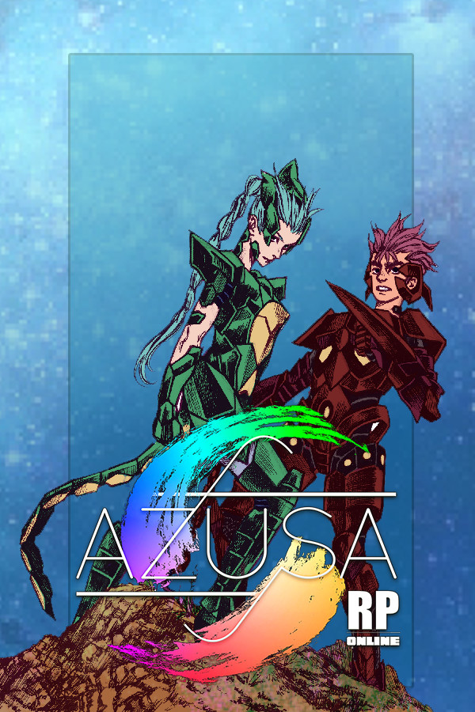

Azusa Online
Azusa Online
Details
|  | |
| Playtime | Not Played |
| Last Activity | Never |
| Added | 21/04/2020 |
| Modified | Never |
| Completion Status | Not Played |
| Source | Steam |
| Platform | PC |
| Release Date | 30/01/2019 |
| Community Score | 61 |
| Critic Score | |
| User Score | |
| Genre | Indie Massively Multiplayer RPG Strategy |
| Developer | Inutaishos |
| Publisher | Inutaishos |
| Feature | MMO Multiplayer Online Pvp Pvp |
| Links | PCGamingWiki Community Hub Discussions Guides Store Page News |
Description

Roleplay Driven
The game is completelly designed to allow the player to develop their character into the game's story, while at the same time interacting with other players, and being able to define the future with their actions, and, as time passes, these characters will grow old and pass away, allowing the player to play with their next generations progressively, and experience an exciting timeline.
Players in Azusa can develop their character into being almost anyone, or anything, from a simple baker working in a castle, to an engineer that builds a prosperous city, or even a strong and brave hunter that becomes a Guardian of Olympo, granted with enough powers to protect or destroy the world, or even a retired Guardian that uses his final years to teach and train young guardians to protect future generations!
In Azusa's universe villains are also other players, making it even possible to completely destroy a prosperous city, changing the direction of the game's story!

Guardians
Since mythological eras, Hades has been trying to turn earth into his realm by killing every creature, however, when evil appears, young heroes wearing the legendary olympian armors, with fists strong enough to cut the sky and open craters on earth, risk their lives to save the world! They are known as Olympian Guardians, and, being backed by the Gods in Olympo, Zeus, Poseidon and Athena, they fight to define the destiny of earth!
These armors were organized in two different tiers: The ordinary guardians, who are based off creatures, showing their roles of protecting the creation, and the golden guardians, whose armors were directly crafted by the gods, and usually fight to protect them. The golden armors are organized in groups: Elites, the one assigned for those who fight for Zeus; Marines, for those who protect Poseidon and the ocean; Zodiac, for those responsible of protecting Athena's Temple; And Princes, for those responsible of keeping order in the underworld.
Each armor has a unique playstyle and set of skills, making the combat be a unique mixture of strategy and real time action, while also assuring that each battle is completely dynamic and unpredictable.
Guardians are picked by "destiny" as they fight in Elemental Arenas that are scattered around the entire world. Kids are commonly sent to train and grow into dangerous zones to, one day, be gifted with one of these legendary armors and, using their cosmo energy, manage to manipulate the armors' elements, developing new techniques and unique builds/playstyle.

Underworld
After dying, the player in the Azusa world goes to the Underworld, the realm of Hades, which has been redesigned by himself to be a place of suffering and punishment for humans. With the aid of suffering, Hades is able to annihilate all that is good in the souls of those who perished, transforming them into ferocious and ruthless beings called Reapers. Now, wearing the Armor of the Underworld, the Reapers' main goal are to spread death and chaos across Earth.
In other words, a friend long dead may return as a villain trying to kill you and destroy everything he once loved. As the great wars continue, the destruction between nostalgic battles makes up perfect dramatic scenes in this world of Roleplay.
When you finally die, you will descend into Yomotsu Mountain, and find yourself near Hell's Gate.
In the Underworld, information is present for newcomers, explaining how the sections of Hell are and what they are for, with those being numerous jails or prisons.
After crossing the gates of Hell, you will be in the first valley of the first prison. This valley is the edge of the Acheron River, where the indecisive souls spend their eternity trying to cross the river in an infinite loop. There is a way to cross the Acheron River, and it is only through the Raft of Souls. To call the raft, you must drop all the money on the shore and give up your past life. The Soul Raft will then take you to the second valley: Hell's Court.
In this hall you will find the Book of Judgments. Written the names of the dead and their main sin, once you read that book, you will be judged, and then taken to one of the 16 valleys within the 8 prisons of the Underworld.
You will not be able to walk through prisons as a normal soul. You will be there until you become a Reaper or, if you find yourself lucky, you end up being rescued. Every prison has it's own sufferings, and each one of those functions as a training method unique to that area. Once you can master the sufferings and enter the world of nightmares, you will be able to end your agonies by killing your good side. It will be a difficult battle, but if you end up on the winning side, you will return as a Reaper, the main villains of the game, who can roam freely through the prisons of the Underworld.

Character Customization
Create a unique character by customizing your appearance through numerous combinations of hair and clothing, and play with one of the 5 races in the Azusa universe. Not just Humans, you can unlock special races like Angels, Demons, Kappas and Lemurians. The choice is yours!
You have the freedom to develop a perfect match for your playstyle as you can decide the talents your character will have, being able to increase directly each status you gain. However, Azusa's character customization is not limited to the creation window. While you are playing, you will be able to discover many differents training methods, and even be trained by several masters as they will also define how strong your character will be. Your adventure will not only define the history of the world around you, but also the unique attributes of each character.

Civilian, Masters and Fighters
There are 3 main classes in the game, which will define most of your adventure in Azusa. Even though fights and powers are commonly used to set the fate of the world, Azusa's universe is not simply about battles and conflicts. Each one of these classes will define the importance and the role you will play.
The Civilian class holds most traits of utility, tending to have a common lifestyle. Do not think, however, that civilians are determined to be weak, for they too can become powerful Guardians. The civilizans are the only ones able to learn all the civil traits at once, allowing them to be builders, doctors, tailors, barbers etc. And generally they are the richest classes of the game, able to build homes, furniture, create stores and even more!
People in the Masters class are great at training friends or students, as their traits help them increase the status gains of who they are training with. Masters can also develop fighting styles that will increase players' chances of a critical attack, counter-attack, or even a combo of consecutive hits.
Fighters are the ones who have the best fighting potential as their traits increase their talents (How fast they will gain status), but only your style of play will define how strong you really can be!
Each class depends each other. Use the money in game to interact and get help from other players! In addition, each class can learn a single random civil trait, so it is possible to roll a fighter with medical trait, for example.

Training Methods and Ranks
In Azusa, there are many ways to become stronger. You can become one of the most powerful players in the game simply by Roleplay, but there are still several other things you can do to see some progression. Most of these training methods should be learned from other players, mainly players with Ranks.
Ranks are characters with an important global position, such as, but not limited to: The king of a city, a god, a golden Guardian, a hermit living in a forest etc. To become a character with one of these positions you must be responsible and fit that role, leading the history of the game as such. Some of the main functions of these ranks are to teach and train future Guardians, ensuring the fluidity and dynamism of the story.
There are more than 28 training methods so far to be learned, with they being mainly organized in 3 styles: Active trainings, half "afk" (Away from keyboard) training and action training. Action training usually doesnt need to be learned, since they are simply stuff like punching a sandbag or sparing with friends or masters. Active training methods require you to concentrate and reach certain arrow directions. These methods are the most efficient, and the greater your concentration, the greater are your gains. Half "afk" methods are the easiest to use, being the act of your character training alone, not needing the player to constantly pay attention to what's happening at that moment.
The active training methods are organized into three categories: Meditation, Cosmo Charge and Shadow Sparing. You can increase your mastery in these categories while you train a method on them, but there are two different types of active training across these categories, simply called "local training" and "normal training". Local training can only be used in certain areas of the world, like, for example, a method of trying to reverse the flow of waterfalls can only be used near a waterfall, so it is a local training. Local training increases your Elemental Control, and depending on the element of your cosmos, affects the damage of your elemental technique.
So, training in the desert, Asgard, or any of the different biomes in the Azusa world will build your character in different ways!

Biomes
You can adventure through the many biomes in the Azusa world. Each biome has its own unique possible local training and architecture, and are commonly protected by different gods. There are also different materials in each zone of the Azusa world, so if you are an explorer you can travel and commercialize resources around the world and gain decent profit, learn different architecture styles and of course, fight for the justice or destruction of a region!

Dungeons
Administrators also have the freedom to make custom dungeons, zones filled with challenges, traps, puzzles and unique enemies that protect important secrets or treasures. Some canonical dungeons already exist in the game while others are created as global history progresses, allowing players to discover new places never seen before as they look for treasures that can help them win wars and protect the world.

Relics and Treasures
Relics are objects similar to Armors, forged with a certain amount of cosmo energy inside, turning them into treasures capable of giving someone powers and techniques. Most relics hold a unique utility, others only hold an extra amount of power, but all of them are usually keys to decide a battle, some relics are so powerful that they can even overpower the Guardians' Armors themselves!
However, these artifacts are usually collected by thieves or mythological creatures, and are commonly protected by them in dungeons. However, there are also custom relics made by experienced Lemurians. The relics utility vary in almost everything, from relics able to burn or poison your enemies, to relics that are able to absorb blasts or deflect them. It will all depend on your luck as you explore the game's world!

Time Travel And Custom Gods
The amount of things you can do and change in Azusa's universe is unlimited, thanks to custom gods and time travel, systems that further enhance Roleplay's ability to affect and change history.
With time travel, you can experience situations and events never seen before in other online games, such as going back to a point in the Azusa's base history and find canonical heroes, or even travel back in the distant past and find characters that one day were played by other people. These events can even be influenced or changed by the presence of travelers! However, time travels are very rare events that can affect the future on a grand scale, and when these drastic changes happen, global story is reviewed and a "Time Skip" can happen (Leaps in time of 80 years), sending all players in the actual present to their next generation, where the changes would be applied. It is worth mentioning that the time travel system is a complex mechanic, usually managed by one or more administrators, who, combined with the Roleplay system, allows almost infinite mutability in the development of game history.
These journeys are also used to complement the base story, causing travelers to participate in or assist canonical events, not necessarily resulting real changes in the universe, but rather ensuring that such events have indeed taken place, like, for example, joining the moment that Hades rebelled against Zeus for the first time, ending up perhaps being responsible for the first Great Wars that takes much of Azusa's lore.
Custom Gods is a system that allows for new gods to emerge to further complement the game's history, depending on whether that god can be revived or discovered, as can be created by the players, generating with it a completely new direction for the main plot of this universe.

Trial Systems
Azusa features a system that promotes the interaction between the players, and even motivates them to explore the game's universe and history, developing their characters on the process.
Similar to how tabletop RPG masters lead a campaign, administrators can modify a set of choices, tests, effects, depending on whatever's going on in the story. For example: A player can find a book in a library shelf that mentions the location of a dungeon, and after talking about it in public, a group ends up going to the right place to explore it, and as they may end up falling into a hidden cave, they would go through various challenges, traps, enemies, all depending on the roll of dices, quality of roleplaying and of course, the outcome of it all would be completely dependant on what choices they made on their way through. As a result, administrators are always able to scale up possible adventures along with the events explored by players. The trial system intertwines with several other mechanics like, for example, trials and adventures that serve as training so that young Guardians can learn new methods of training, how to awaken the Sixth Sense, or even trials whose result ends up releasing a new area of the game, with new ranks or gods.
What differs the trial system from other MMORPG quests is that the trials are usually only completed once, with the main function of judging situations whose outcome can completely change the course of the game's history. And, as trials are made and things are going on in history, managers can always create new adventures or challenges that fit the previous results, ensuring the fluency promised by the style of the game focused on Roleplay, allowing the game experience to always be unique, since the adventure can not simply be repeated or undone.